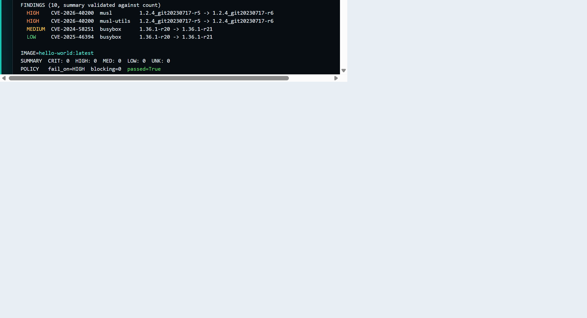
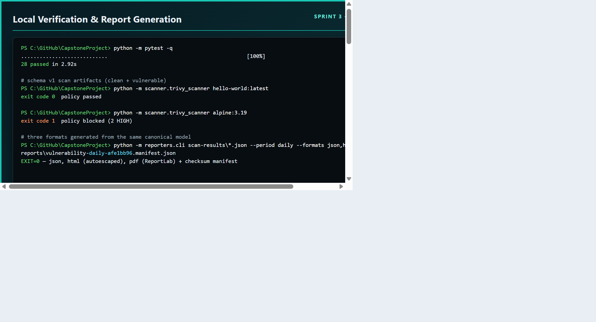
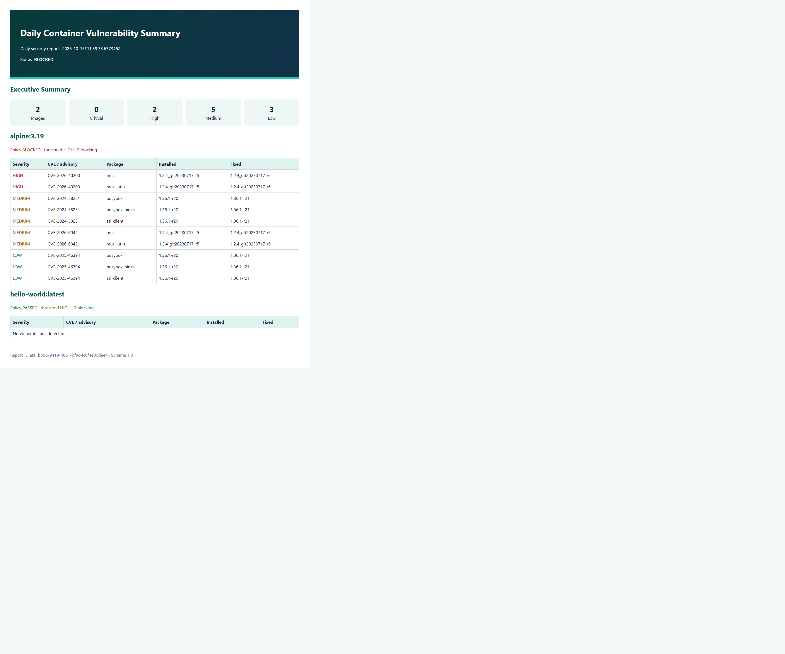
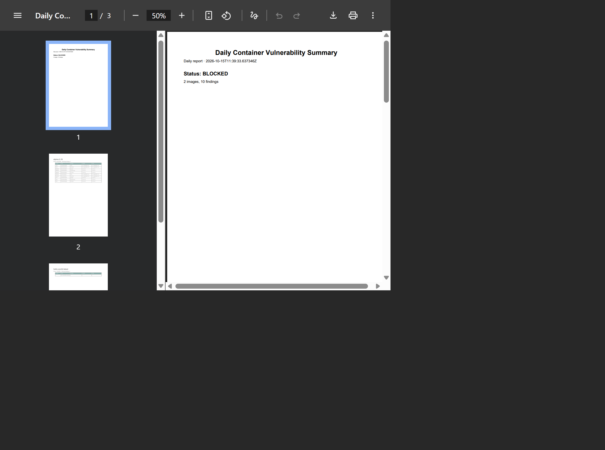
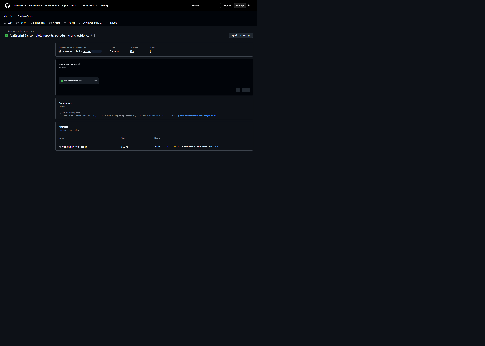
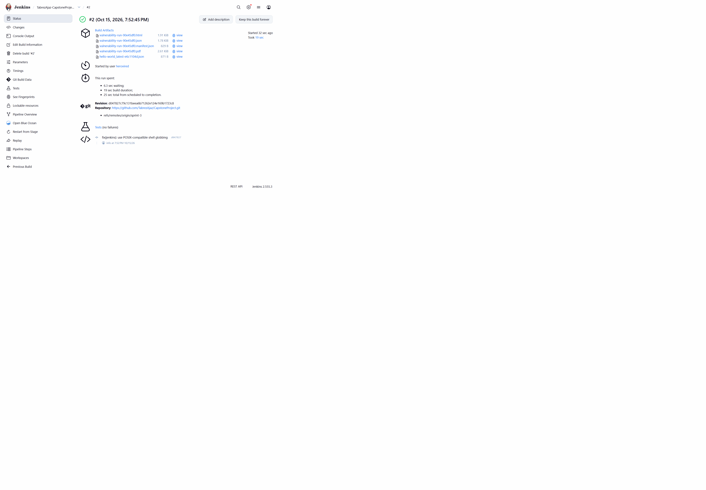
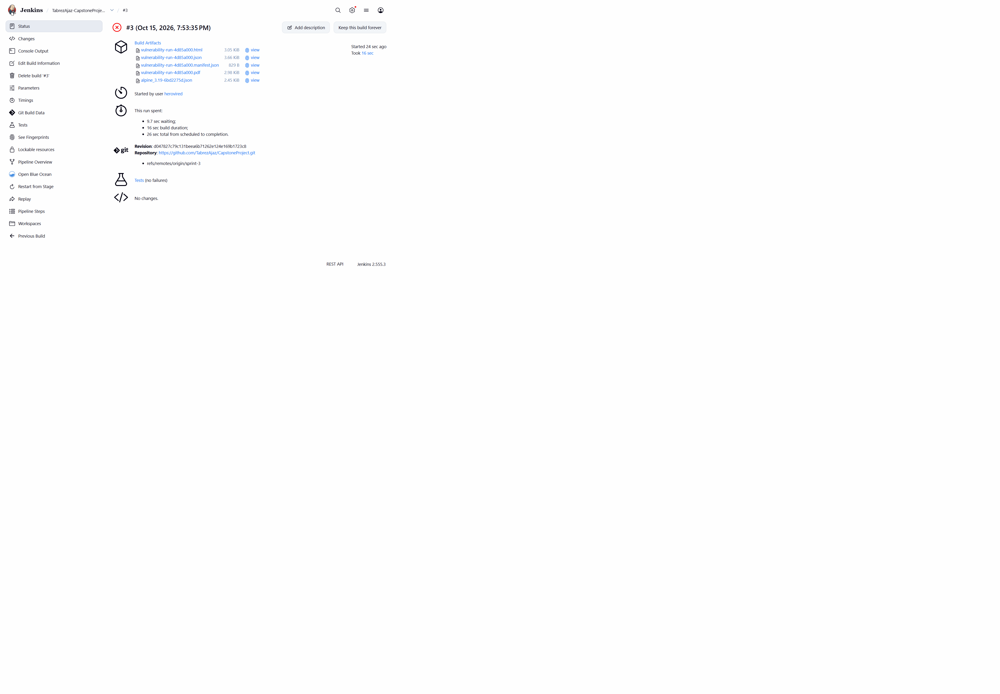
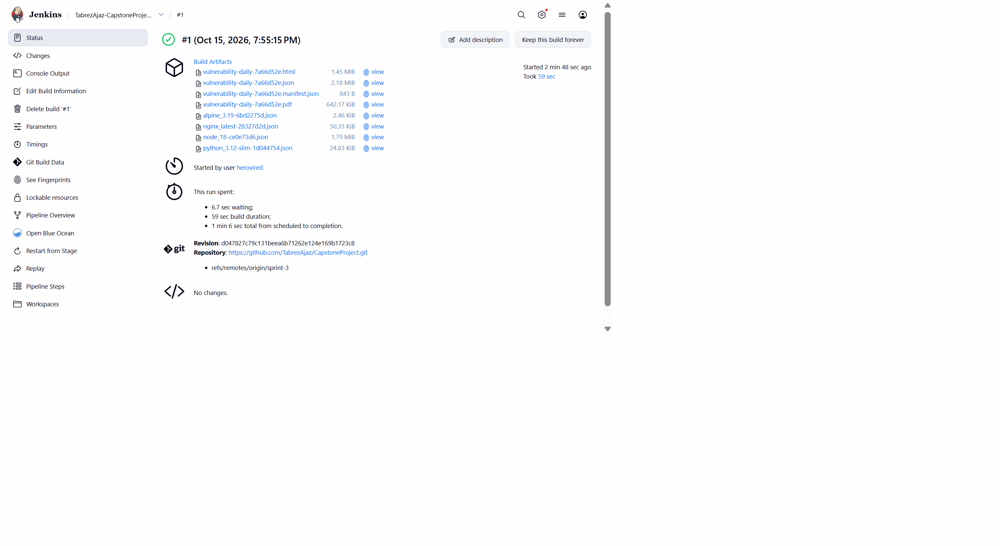

Container Image Vulnerability Scanner with Reporting
Report Generation & Notification System
Versioned scan artifacts, JSON/HTML/PDF reporting with checksum manifests, secure Slack delivery, and scheduled daily/weekly summaries.
1. Executive Summary
Sprint 1 established scanning. Sprint 2 enforced it in CI. Sprint 3 makes the results communicable: every scan now produces a versioned artifact, a single canonical report model generates JSON, HTML, and PDF outputs with a SHA-256 manifest, and the same notifier sends severity-aware Slack alerts from GitHub Actions, Jenkins, or a local shell.
alpine:3.19 produced a schema 1.0 artifact with 2 HIGH findings and exit code 1; a single command generated JSON, HTML, and PDF reports that share one report ID and checksum manifest; GitHub Actions run #13 generated the reports inside CI and uploaded a 5,865-byte evidence bundle.2. Requirement Traceability
| Sprint 3 requirement | Implementation | Status |
|---|---|---|
| Structured report generation (JSON / HTML / PDF) | reporters/ with three renderers and one canonical model | VERIFIED |
| Report manifests and traceability | SHA-256 checksum manifest written last | VERIFIED |
| Slack or Teams notification | Provider-neutral notifier protocol with Slack implementation | IMPLEMENTED |
| Severity-customized alerts | CRITICAL/HIGH/MEDIUM/LOW styles plus clean green summary | TESTED |
| Daily / weekly summaries | GitHub scheduled workflow and Jenkins summary pipeline | IMPLEMENTED |
| CI/CD integration | Reports generated and archived by GitHub Actions and Jenkins | VERIFIED |
3. Architecture and Data Flow
Scanning, presentation, and delivery stay separate. Reporters never invoke Trivy, notifiers never parse raw scan output, and policy decisions remain in scanner/trivy_scanner.py. Slack is the only implemented provider, but Teams or email can implement the same protocol without touching reporting or CI orchestration.
4. Scan Artifact Schema 1.0
| Field | Purpose |
|---|---|
schema_version | Contract version; loaders reject anything else |
scan_id, scanned_at | UUID and UTC timestamp for traceability |
image, summary, findings | Image identity, five-key severity counts, normalized findings |
policy | fail_on, blocking_findings, passed |
scan_options | Severities, unfixed handling, package scope, timeout |
scanner, source | Scanner versions and sanitized CI metadata |
The loader verifies that per-severity counts equal the findings and rejects raw Trivy JSON or legacy files before rendering, so a report can never silently mix formats.

alpine:3.19 blocked with 2 HIGH findings, hello-world:latest passed.5. Report Generation
| Format | Renderer | Notes |
|---|---|---|
| JSON | Canonical model serialization | Machine-readable source of truth |
| HTML | Jinja2 with autoescaping | Summary cards, per-image policy, findings tables, print CSS |
| ReportLab | Pagination, repeating headers, wrapped long values, no browser or paid API |
python -m reporters.cli scan-results/*-????????.json --period daily \ --formats json,html,pdf --output-dir reports \ --title "Daily Container Vulnerability Summary"




6. Notification Design
- Immediate
runalerts fire only at or abovenotifications.alert_on(defaultHIGH). - CRITICAL is urgent/red, HIGH action-required/orange, MEDIUM warning/yellow, LOW informational/blue, and a clean summary is green.
- Daily and weekly summaries are always delivered, including clean and partially failed batches.
- Messages carry image names, severity counts, policy state, cadence, and the report ID — never every CVE and never the webhook URL.
- Only a provider-neutral
Notifiercontract is exposed, so Teams or email can be added later without changing reports or pipelines.

7. Security and Reliability
| Control | Behaviour |
|---|---|
| Secret handling | Webhook read only from SLACK_WEBHOOK_URL environment or CI credential binding; never from YAML, files, logs, or arguments |
| Endpoint validation | HTTPS only, hooks.slack.com/hooks.slack-gov.com, /services/ path, no credentials, no fragment, no non-443 port |
| Transport | Redirects refused, 10-second timeout, bounded payload size, no shell interpolation of the secret |
| Retries | At most three attempts with exponential backoff plus jitter for timeouts, 408, 425, 429, and 5xx; honour numeric Retry-After; other 4xx are not retried |
| Injection safety | HTML autoescaped; scan-controlled values truncated and @channel/@here neutralized |
| Failure clarity | Policy block (exit 1) stays distinct from operational failure (exit 3) so a broken scanner can never look like a clean image |
8. Scheduling
Daily and weekly summaries are fresh scans of every image in config.yaml, not aggregations of history, so they always reflect current vulnerabilities.
| Platform | Cadence | Implementation |
|---|---|---|
| GitHub Actions | 02:23 UTC daily, 03:41 UTC Monday | .github/workflows/scheduled-summaries.yml plus manual daily/weekly dispatch |
| Jenkins | H 2 * * * and H 3 * * 1 (UTC) | Two Pipeline jobs sharing ci/Jenkinsfile.summaries with a SUMMARY_PERIOD parameter |
main at c559d55, enabling GitHub to evaluate the scheduled workflow. Jenkins UTC timers remain configured on the jobs. GitHub Slack delivery additionally requires the repository secret; it is not inferred from Jenkins delivery.9. Automated Testing
| Area | Coverage |
|---|---|
| Scanner and policy | Command construction, thresholds, invalid configuration, missing executable, invalid JSON, multi-image precedence, exits 0–3 |
| Report contracts | Schema loading, count-invariant rejection, aggregation totals, unknown-format rejection |
| Rendering | Matching report IDs across formats, %PDF- signature, HTML escaping of hostile values |
| Notifications | Unsafe webhook rejection, mention stripping, severity colour, retry on 429 with Retry-After, no retry on 400, secret-safe errors |
python -m pytest -q ............................ [100%] 28 passed in 2.92s
10. GitHub Actions Integration
The existing gate now captures the scanner exit code without ending the job, generates JSON/HTML/PDF reports, conditionally sends a severity-aware alert, uploads every artifact under if: always(), and only then restores the correct build result.

sprint-3 completed successfully with one retained artifact.
11. Jenkins Integration
ci/Jenkinsfile adds a Generate Reports stage and an optional Notify Slack stage bound to the slack-webhook-url Secret Text credential. The scanner result is preserved and only restored after reporting and notification, so archived evidence is never lost. Summary builds use ci/Jenkinsfile.summaries.
dash, so the first Sprint 3 build failed with exit 127 when shopt and bash arrays were used. The Jenkins stages were rewritten with POSIX globbing; subsequent builds passed on the first attempt.
hello-world:latest): policy passed and the JSON/HTML/PDF report plus manifest were archived.
alpine:3.19): the gate failed with 2 HIGH findings and the reports were still archived.POLICY BLOCKED, then report generation continues before the build result is enforced.11.1 Scheduled summaries
Two Pipeline jobs share ci/Jenkinsfile.summaries with different cadence parameters and UTC cron triggers, and each run rescans every image in config.yaml.


H 2 * * * daily and H 3 * * 1 weekly with the next run reported in Coordinated Universal Time.12. Slack Delivery
Live delivery was verified on 29 October 2026 using the Jenkins Secret Text credential slack-webhook-url. No webhook value is included in this report or repository.
| Case | Verified evidence | Result |
|---|---|---|
HIGH alert: alpine:3.19 | Main build #4: 2 HIGH findings; Slack notification delivered in 1 attempt(s); 28 tests passed; five artifacts archived. | Delivered; build intentionally blocked by policy. |
CRITICAL alert: node:18 | Main build #5: Slack notification delivered in 1 attempt(s); JSON, HTML, PDF, manifest, and scan artifact archived. | Delivered; build intentionally blocked by policy. |
| Daily summary | Daily build #16: four fresh scan artifacts and four report files archived; Slack notification delivered in 1 attempt(s). | SUCCESS; notification enabled for this manual run. |
| Weekly summary | Weekly build #4: four fresh scan artifacts and four report files archived; Slack notification delivered in 1 attempt(s). | SUCCESS; weekly period and notification explicitly selected for this manual run. |
12.1 HIGH alert: original console evidence
Source: main build #4 console. Selected original lines, in source order; omitted lines are not reproduced. UTC timestamps below come from Jenkins, not a reconstructed terminal screenshot.
[2026-10-29T06:37:53.473Z] 28 passed in 0.52s
[2026-10-29T06:37:55.808Z] 2026-10-29 06:37:55,716 INFO Done image=alpine:3.19 summary={'CRITICAL': 0, 'HIGH': 2, 'MEDIUM': 5, 'LOW': 3, 'UNKNOWN': 0}
[2026-10-29T06:37:55.808Z] 2026-10-29 06:37:55,717 ERROR POLICY BLOCKED image=alpine:3.19 blocking_findings=2
[2026-10-29T06:37:56.801Z] Masking supported pattern matches of $SLACK_WEBHOOK_URL
[2026-10-29T06:37:57.366Z] Slack notification delivered in 1 attempt(s)
[2026-10-29T06:37:58.034Z] Archiving artifacts
[2026-10-29T06:37:58.094Z] Archiving artifacts
ERROR: Vulnerability gate exited with code 1
Finished: FAILURE
Interpretation: two HIGH findings intentionally block deployment. Successful Slack delivery and artifact archiving precede the final policy failure. Five files remain archived.
12.2 CRITICAL alert: original console evidence
Source: main build #5 console. Selected original lines, in source order.
[2026-10-29T06:38:35.878Z] 28 passed in 0.34s
[2026-10-29T06:38:42.752Z] 2026-10-29 06:38:41,499 INFO Done image=node:18 summary={'CRITICAL': 228, 'HIGH': 2188, 'MEDIUM': 6712, 'LOW': 2754, 'UNKNOWN': 0}
[2026-10-29T06:38:42.752Z] 2026-10-29 06:38:41,599 ERROR POLICY BLOCKED image=node:18 blocking_findings=2416
[2026-10-29T06:38:55.516Z] Masking supported pattern matches of $SLACK_WEBHOOK_URL
[2026-10-29T06:38:56.071Z] Slack notification delivered in 1 attempt(s)
[2026-10-29T06:38:56.560Z] Archiving artifacts
[2026-10-29T06:38:56.615Z] Archiving artifacts
ERROR: Vulnerability gate exited with code 1
Finished: FAILURE
Interpretation: 228 CRITICAL and 2,188 HIGH findings produce 2,416 blocking findings. Delivery succeeded; FAILURE is the expected gate result, not a notification failure. Five files remain archived.
12.3 Daily summary: original console evidence
Source: daily build #16 console. Manual parameters: SUMMARY_PERIOD=daily, NOTIFY=true, SCANNER_FAIL_ON=HIGH. Selected original lines, in source order.
[2026-10-29T06:39:22.253Z] Scanner exit code: 1 [2026-10-29T06:39:34.945Z] Masking supported pattern matches of $SLACK_WEBHOOK_URL [2026-10-29T06:39:35.504Z] Slack notification delivered in 1 attempt(s) [2026-10-29T06:39:35.891Z] Archiving artifacts [2026-10-29T06:39:35.982Z] Archiving artifacts Finished: SUCCESS
Interpretation: a summary reports vulnerabilities rather than deploying an image, so scanner policy exit 1 is accepted. Delivery and report archiving succeeded; eight files remain archived.
12.4 Weekly summary: original console evidence
Source: weekly build #4 console. Manual parameters: SUMMARY_PERIOD=weekly, NOTIFY=true, SCANNER_FAIL_ON=HIGH. Selected original lines, in source order.
[2026-10-29T06:39:58.078Z] Scanner exit code: 1 [2026-10-29T06:40:16.783Z] Masking supported pattern matches of $SLACK_WEBHOOK_URL [2026-10-29T06:40:17.337Z] Slack notification delivered in 1 attempt(s) [2026-10-29T06:40:17.705Z] Archiving artifacts [2026-10-29T06:40:17.803Z] Archiving artifacts Finished: SUCCESS
12.5 Fresh portfolio findings
Both summary runs independently scanned all four configured images on 29 October 2026 and produced the following counts. These are date-specific OS-package findings; they do not replace the historical Sprint 1 scan results.
| Image | CRITICAL | HIGH | MEDIUM | LOW | Blocking at HIGH |
|---|---|---|---|---|---|
nginx:latest | 1 | 58 | 106 | 164 | 59 |
python:3.12-slim | 0 | 44 | 58 | 61 | 44 |
alpine:3.19 | 0 | 2 | 5 | 3 | 2 |
node:18 | 228 | 2188 | 6712 | 2754 | 2416 |
12.6 Archived report artifacts
The following filenames were verified through each build's artifact inventory. Links require access to the academic Jenkins server and are subject to its retention policy; the console excerpts above remain embedded in this HTML document.
| Run | Report identifier | Archived report files |
|---|---|---|
| HIGH #4 | vulnerability-run-4db7171c | JSON | HTML | PDF | SHA-256 manifest |
| CRITICAL #5 | vulnerability-run-4dfa0116 | JSON | HTML | PDF | SHA-256 manifest |
| Daily #16 | vulnerability-daily-54236362 | JSON | HTML | PDF | SHA-256 manifest |
| Weekly #4 | vulnerability-weekly-26dc6136 | JSON | HTML | PDF | SHA-256 manifest |
12.7 Default-parameter automation closure
Commit 2bc95ab enables NOTIFY=true and defaults SUMMARY_PERIOD to auto. Auto resolves to weekly for a job ending in -Weekly, otherwise daily. Explicit cadence overrides remain supported. The corrected pipeline passed the live Jenkins declarative validator, and both saved jobs were verified with these defaults and their existing UTC cron expressions.
The following verification builds were triggered without parameter overrides, exercising exactly the defaults used by a timer. They prove default-parameter behaviour; these two builds were manually triggered and are not represented as timer-fired executions.
| Job | Parameters | Resolved cadence and delivery | Result |
|---|---|---|---|
| Daily #17 | auto, NOTIFY=true, HIGH | vulnerability-daily-9c7fcce9; delivered in one attempt; eight archived files | SUCCESS |
| Weekly #5 | auto, NOTIFY=true, HIGH | vulnerability-weekly-e7be4999; delivered in one attempt; eight archived files | SUCCESS |
[2026-10-29T18:28:27.682Z] + PERIOD_TITLE=Daily [2026-10-29T18:28:40.484Z] Slack notification delivered in 1 attempt(s) Finished: SUCCESS [2026-10-29T18:27:40.280Z] + PERIOD_TITLE=Weekly [2026-10-29T18:27:53.087Z] Slack notification delivered in 1 attempt(s) Finished: SUCCESS
13. Verification Status
| Check | Evidence | Status |
|---|---|---|
| Deterministic test suite | 28 passed locally and in GitHub Actions | PASS |
| Schema 1.0 artifacts | Real scans of two images with validated counts | PASS |
| JSON / HTML / PDF generation | One report ID, three formats, checksum manifest | PASS |
| Notification policy | Threshold skip and fail-closed validation captured | PASS |
| GitHub Actions reports | Run #13 with report step and evidence bundle | PASS |
| Jenkins reports | Build #2 green and build #3 blocked, reports archived in both | PASS |
| Daily / weekly summaries (Jenkins) | Daily and weekly build #1 with four fresh image scans each | PASS |
| Slack real delivery | Main builds #4 (HIGH) and #5 (CRITICAL): delivered in one attempt each | PASS |
| Daily / weekly Slack summaries | Daily #16 and weekly #4: SUCCESS, eight archived files each, delivered in one attempt each | PASS |
| Jenkins schedule configuration and default delivery | UTC timers retained; daily #17 and weekly #5 use auto/NOTIFY=true without overrides, resolve correct cadence, deliver, and succeed | PASS |
| GitHub default-branch deployment | Sprint 3 merged into main at c559d55; both schedule expressions deployed | CONFIGURED |
| GitHub Slack delivery | Repository SLACK_WEBHOOK_URL secret still requires direct user entry; Jenkins secret is separate | PENDING |
14. Cost
All Sprint 3 components are open source and run on existing infrastructure: Jinja2 and ReportLab replace commercial PDF services, Slack incoming webhooks are free on the current plan, and the vulnerability database plus CI caching keep repeat runs cheap. Incremental software cost remains ₹0.
15. Troubleshooting and Limitations
| Symptom | Cause and resolution |
|---|---|
Unsupported scan artifact schema | A raw Trivy or Sprint 1/2 file was passed. Regenerate artifacts with the current scanner and pass only *-????????.json files. |
Notification skipped | The run report is below alert_on. This is intentional; use --always for summaries. |
SLACK_WEBHOOK_URL is required | The secret is not bound. Set the GitHub secret or the Jenkins slack-webhook-url credential. |
| Slack step skipped in CI | Expected when the secret is absent or the event is a pull request from a fork. |
| Artifacts missing after some weeks | CI artifact retention expires; the report manifest records checksums for long-term traceability. |
16. Conclusion
Sprint 3 completes the reporting and notification layer. Vulnerability data is now versioned, validated, rendered into three formats with verifiable checksums, and delivered to the people who need it — without weakening the Sprint 2 gate, and without introducing any paid service, database, or dashboard. Dashboards and historical trend storage remain deliberately out of scope for Sprint 4, and CVE exception handling remains Sprint 5.